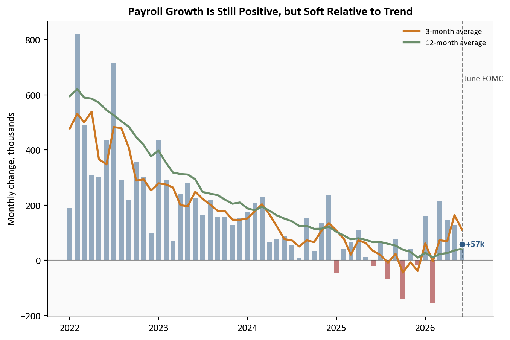
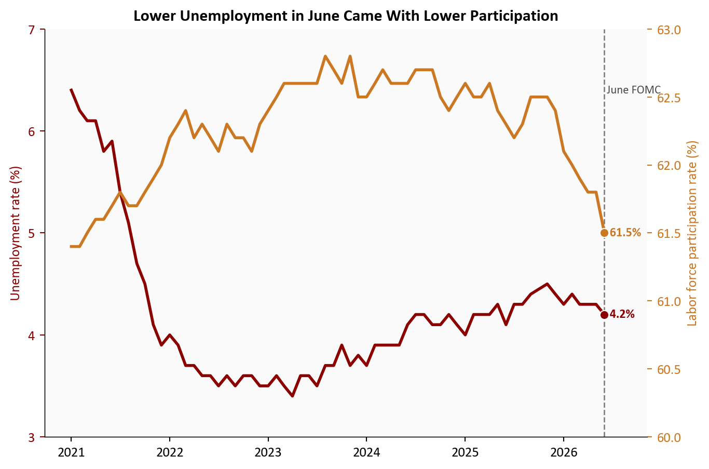
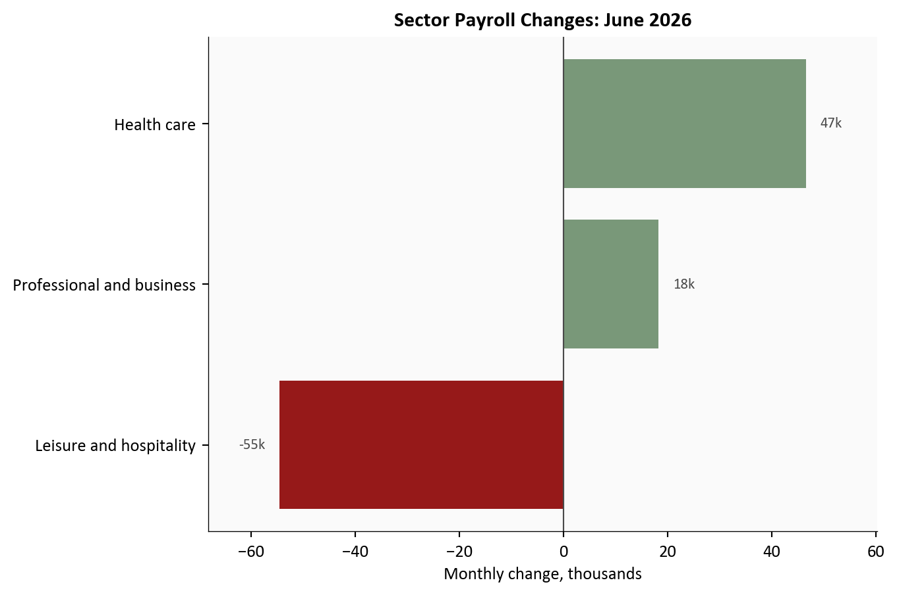
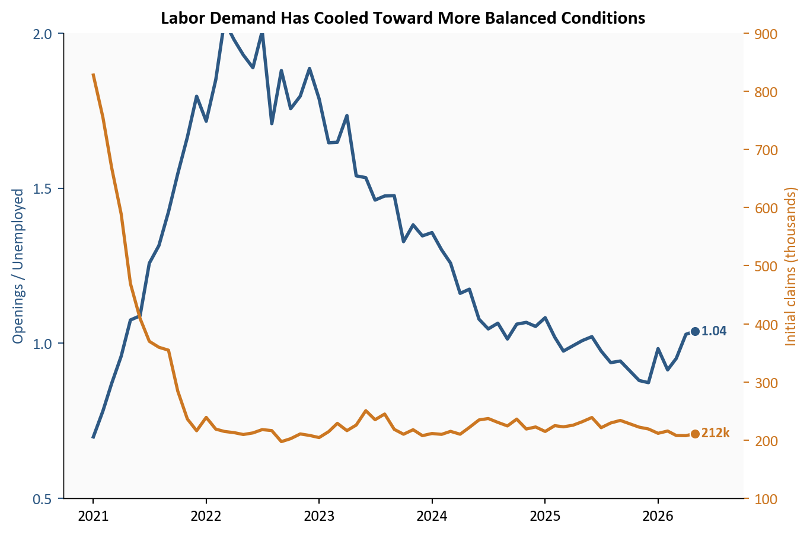
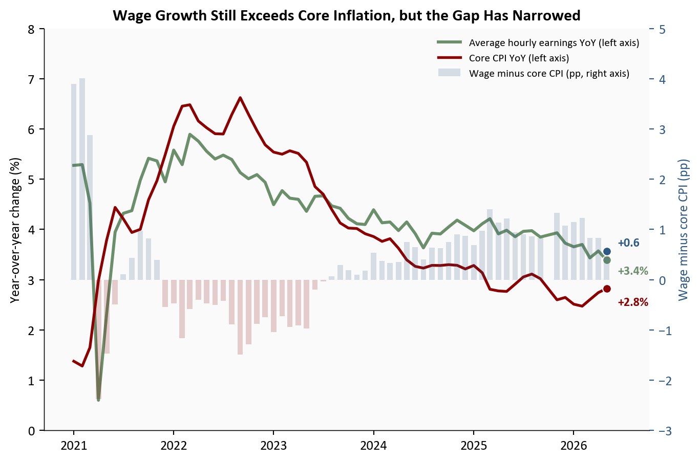
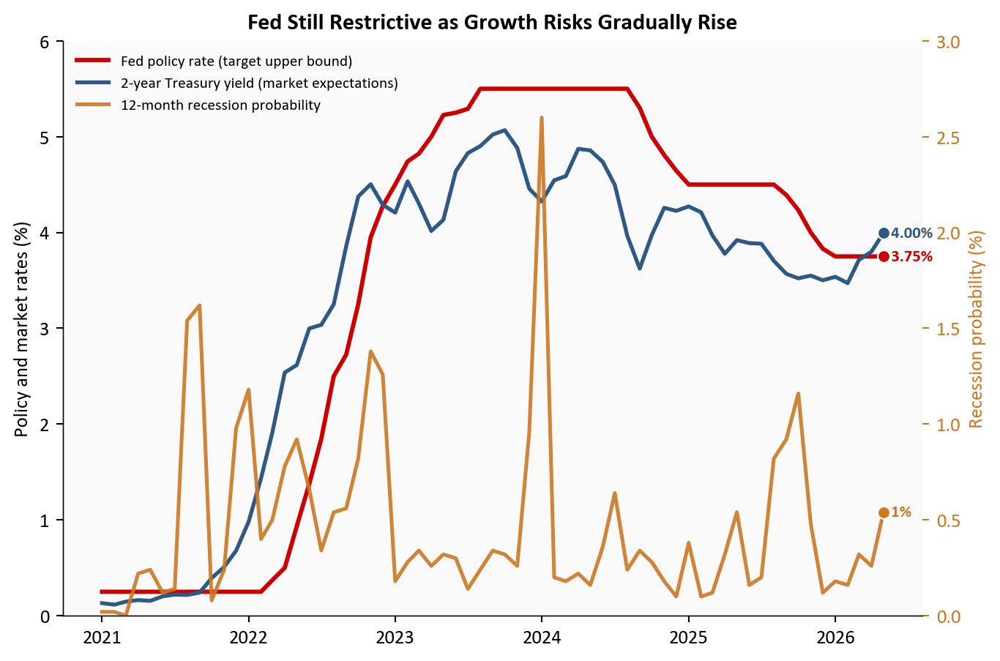

+57k
June Payroll Change
4.2%
Unemployment Rate
61.5%
Participation Rate
3.5%
Average Hourly Earnings YoY
Data as of June 2026 | Source: BLS via FRED
Yoram Gilboa
July 3, 2026
Data as of June 2026 | Source: BLS via FRED
Nonfarm payrolls rose +57k in June 2026, materially below the roughly +110k pace expected before release. The unemployment rate changed by -0.1pp to 4.2% from 4.3%, but the details matter: labor force participation moved -0.3pp to 61.5%, and the labor force itself changed by about -720k. In other words, the headline unemployment dip does not signal broad labor re-acceleration. It reflects weaker labor supply in the month.
The June report keeps the labor market in the slow, uneven transition that has defined the past year. Payroll growth remains positive but is clearly slower than the 2023 to 2025 norm, and it sits below its own 42k 12-month trend. Wage growth, at 3.5% year over year, still runs above the pace consistent with a clean return to 2% core inflation. The Federal Reserve is therefore left reconciling two facts that point in different directions: labor demand is easing, while nominal wage and price pressures have not fully normalized.
This post fetches all data directly from FRED in the notebook and computes indicators in-line:
All chart code is executable in this file. Data are current as of July 2026.
June payroll growth sits below both its 3-month and 12-month moving averages, which is the first chart’s central point. The monthly gain is still positive, but the shape is that of a slowing labor market rather than a breaking one: fewer outsized upside months, and more prints clustered in a range consistent with weaker labor demand.
The implication runs in one direction. When payroll gains converge toward a lower range and participation drifts down at the same time, aggregate labor input growth slows from both sides. That can hold unemployment roughly stable for a while, but it thins the economy’s buffer against any broader loss of demand.
# Start in 2022 to keep the y-axis tight and the trend easier to read.
plot_df = df.loc["2022-01-01":, ["payroll_change_k", "payroll_3m_avg_k", "payroll_12m_avg_k"]].dropna()
fig, ax = plt.subplots(figsize=(7.2, 4.8))
# Bars show the noisy monthly payroll print with color by sign.
bar_colors = np.where(plot_df["payroll_change_k"] >= 0, COLORS["primary"], COLORS["accent"])
ax.bar(plot_df.index, plot_df["payroll_change_k"], width=20, color=bar_colors, alpha=0.5, zorder=2)
# Overlay short and long trend smoothers to show momentum shifts.
ax.plot(plot_df.index, plot_df["payroll_3m_avg_k"], color=COLORS["warning"], linewidth=2.0, label="3-month average", zorder=3)
ax.plot(plot_df.index, plot_df["payroll_12m_avg_k"], color=COLORS["secondary"], linewidth=2.0, label="12-month average", zorder=3)
# Mark the June FOMC meeting to align labor trends with policy timing.
if plot_df.index.min() <= FOMC_JUNE_2026 <= plot_df.index.max():
ax.axvline(FOMC_JUNE_2026, color=COLORS["neutral"], linestyle="--", linewidth=1.0, alpha=0.7, zorder=1)
ax.text(
FOMC_JUNE_2026,
plot_df["payroll_change_k"].max() * 0.82,
" June FOMC",
fontsize=8.5,
color=COLORS["neutral"],
va="top",
)
# Highlight the latest monthly print with an endpoint marker and direct label.
last_date = plot_df.index[-1]
last_payroll = plot_df["payroll_change_k"].iloc[-1]
ax.scatter(last_date, last_payroll, s=45, color=COLORS["primary"], edgecolors="white", linewidth=0.8, zorder=4)
ax.text(last_date, last_payroll, f" {last_payroll:+.0f}k", fontsize=9, color=COLORS["primary"], va="center", fontweight="bold")
# Extend the right edge so endpoint labels are not clipped.
date_range = plot_df.index[-1] - plot_df.index[0]
ax.set_xlim(right=plot_df.index[-1] + date_range * 0.08)
ax.axhline(0, color=COLORS["neutral"], linewidth=0.8, alpha=0.6)
ax.set_ylabel("Monthly change, thousands")
ax.set_title("Payroll Growth Is Still Positive, but Soft Relative to Trend", fontsize=12, fontweight="bold")
ax.yaxis.set_major_formatter(ticker.StrMethodFormatter("{x:,.0f}"))
ax.xaxis.set_major_formatter(mdates.DateFormatter("%Y"))
ax.legend(loc="upper right", fontsize=8, frameon=False)
plt.tight_layout()
fig.savefig(IMG_DIR / "payroll-trend-june-2026.png", dpi=150, bbox_inches="tight")
Source: U.S. Bureau of Labor Statistics (Current Employment Statistics), via FRED.
The composition of June’s decline matters more than the decline itself. Unemployment moved -0.1pp to 4.2%, yet participation moved -0.3pp to 61.5%, two shifts that sit together only when fewer people are actively in the labor force. The household survey sends the same signal: household employment changed by roughly -507k on the month, weaker than the payroll headline implies.
The distinction carries real weight for policy. A jobless rate that falls because more people are working means something very different from one that falls because the labor force is shrinking. Today it is the second story, and that points to gradual softening rather than any renewed tightness.
# Plot unemployment and participation together to show why headline joblessness fell.
plot2 = df.loc["2021-01-01":, ["UNRATE", "CIVPART"]].dropna()
fig, ax = plt.subplots(figsize=(7.2, 4.8))
# Left axis: unemployment rate.
ax.plot(plot2.index, plot2["UNRATE"], color=COLORS["accent"], linewidth=2.1, zorder=3)
ax.scatter(plot2.index[-1], plot2["UNRATE"].iloc[-1], s=42, color=COLORS["accent"], edgecolors="white", linewidth=0.8, zorder=4)
ax.text(plot2.index[-1], plot2["UNRATE"].iloc[-1], f" {plot2['UNRATE'].iloc[-1]:.1f}%", color=COLORS["accent"], fontsize=9, va="center", fontweight="bold")
# Right axis: participation rate on a separate scale.
ax2 = ax.twinx()
ax2.plot(plot2.index, plot2["CIVPART"], color=COLORS["warning"], linewidth=2.1, zorder=3)
ax2.scatter(plot2.index[-1], plot2["CIVPART"].iloc[-1], s=42, color=COLORS["warning"], edgecolors="white", linewidth=0.8, zorder=4)
ax2.text(plot2.index[-1], plot2["CIVPART"].iloc[-1], f" {plot2['CIVPART'].iloc[-1]:.1f}%", color=COLORS["warning"], fontsize=9, va="center", fontweight="bold")
ax2.grid(False)
ax2.spines["top"].set_visible(False)
if plot2.index.min() <= FOMC_JUNE_2026 <= plot2.index.max():
ax.axvline(FOMC_JUNE_2026, color=COLORS["neutral"], linestyle="--", linewidth=1.0, alpha=0.7)
ax.text(
FOMC_JUNE_2026,
ax.get_ylim()[1] - 0.03 * (ax.get_ylim()[1] - ax.get_ylim()[0]),
" June FOMC",
fontsize=8.5,
color=COLORS["neutral"],
va="top",
)
ax.set_ylabel("Unemployment rate (%)", color=COLORS["accent"])
ax2.set_ylabel("Labor force participation rate (%)", color=COLORS["warning"])
ax.tick_params(axis="y", colors=COLORS["accent"])
ax2.tick_params(axis="y", colors=COLORS["warning"])
ax.set_title("Lower Unemployment in June Came With Lower Participation", fontsize=12, fontweight="bold")
ax.xaxis.set_major_formatter(mdates.DateFormatter("%Y"))
# Use fixed axis ranges to improve comparability across monthly updates.
ax.set_ylim(3, 7)
ax.set_yticks(np.arange(3, 8, 1))
ax2.set_ylim(60, 63)
ax2.set_yticks(np.arange(60, 63.5, 0.5))
date_range = plot2.index[-1] - plot2.index[0]
ax.set_xlim(right=plot2.index[-1] + date_range * 0.08)
plt.tight_layout()
fig.savefig(IMG_DIR / "unemployment-participation-june-2026.png", dpi=150, bbox_inches="tight")
Source: U.S. Bureau of Labor Statistics (Current Population Survey), via FRED.
The sector breakdown separates cyclical cooling from genuine deterioration, and June looks like the former. Gains stayed concentrated in health care and government-related categories, while rate-sensitive and discretionary areas, including leisure and hospitality, turned in weaker prints.
That split is the signature of the post-tightening economy. Services anchored to demographics or public spending hold up, while the sectors most exposed to financing costs and discretionary demand keep working off the excess of the earlier cycle.
# Horizontal bars make the sector rotation easy to compare at a glance.
sector_latest = sector_changes
fig, ax = plt.subplots(figsize=(7.2, 4.8))
# Color by sign so losses and gains can be scanned immediately.
colors = [COLORS["accent"] if v < 0 else COLORS["secondary"] for v in sector_latest.values]
bars = ax.barh(sector_latest.index, sector_latest.values, color=colors, alpha=0.9)
ax.axvline(0, color=COLORS["neutral"], linewidth=0.8)
ax.set_title(f"Sector Payroll Changes: {sector_date.strftime('%B %Y')}", fontsize=12, fontweight="bold")
ax.set_xlabel("Monthly change, thousands")
ax.xaxis.set_major_formatter(ticker.StrMethodFormatter("{x:,.0f}"))
# Dynamic label padding prevents overlap with bars near zero.
span = max(abs(sector_latest.min()), abs(sector_latest.max()))
xpad = span * 0.05
for bar, value in zip(bars, sector_latest.values):
y = bar.get_y() + bar.get_height() / 2
if value >= 0:
ax.text(value + xpad, y, f"{value:.0f}k", va="center", ha="left", fontsize=8.5, color=COLORS["neutral"])
else:
ax.text(value - xpad, y, f"{value:.0f}k", va="center", ha="right", fontsize=8.5, color=COLORS["neutral"])
ax.set_xlim(sector_latest.min() - span * 0.25, sector_latest.max() + span * 0.25)
plt.tight_layout()
fig.savefig(IMG_DIR / "sectoral-payroll-june-2026.png", dpi=150, bbox_inches="tight")
Source: U.S. Bureau of Labor Statistics CES industry series, via FRED.
A single payroll print is noisy, so it pays to cross-check the broader demand indicators. The ratio of job openings to unemployed workers has come well off its peak and now sits near 1.04, while initial claims have edged up to about 222k in monthly-average terms, still short of recessionary levels.
Together these readings describe a soft landing rather than a fresh acceleration. Labor demand is still positive, but the acute excess demand of the earlier cycle has drained away.
# Twin-axis chart keeps openings and claims separate while aligning the trend visually.
plot4 = context_df.loc["2021-01-01":, ["openings_per_unemployed", "claims_avg"]].dropna()
fig, ax = plt.subplots(figsize=(7.2, 4.8))
# Left axis: openings per unemployed worker.
ax.plot(plot4.index, plot4["openings_per_unemployed"], color=COLORS["primary"], linewidth=2.1, zorder=3)
ax.scatter(plot4.index[-1], plot4["openings_per_unemployed"].iloc[-1], s=42, color=COLORS["primary"], edgecolors="white", linewidth=0.8, zorder=4)
ax.text(plot4.index[-1], plot4["openings_per_unemployed"].iloc[-1], f" {plot4['openings_per_unemployed'].iloc[-1]:.2f}", color=COLORS["primary"], fontsize=9, va="center", fontweight="bold")
# Right axis: weekly claims averaged to month.
ax2 = ax.twinx()
ax2.plot(plot4.index, plot4["claims_avg"] / 1000, color=COLORS["warning"], linewidth=2.0, zorder=3)
ax2.scatter(plot4.index[-1], plot4["claims_avg"].iloc[-1] / 1000, s=42, color=COLORS["warning"], edgecolors="white", linewidth=0.8, zorder=4)
ax2.text(plot4.index[-1], plot4["claims_avg"].iloc[-1] / 1000, f" {plot4['claims_avg'].iloc[-1] / 1000:.0f}k", color=COLORS["warning"], fontsize=9, va="center", fontweight="bold")
ax2.grid(False)
ax2.spines["top"].set_visible(False)
if plot4.index.min() <= FOMC_JUNE_2026 <= plot4.index.max():
ax.axvline(FOMC_JUNE_2026, color=COLORS["neutral"], linestyle="--", linewidth=1.0, alpha=0.7)
ax.text(
FOMC_JUNE_2026,
ax.get_ylim()[1] - 0.03 * (ax.get_ylim()[1] - ax.get_ylim()[0]),
" June FOMC",
fontsize=8.5,
color=COLORS["neutral"],
va="top",
)
ax.set_ylabel("Openings / Unemployed", color=COLORS["primary"])
ax2.set_ylabel("Initial claims (thousands)", color=COLORS["warning"])
ax.tick_params(axis="y", colors=COLORS["primary"])
ax2.tick_params(axis="y", colors=COLORS["warning"])
ax.set_title("Labor Demand Has Cooled Toward More Balanced Conditions", fontsize=12, fontweight="bold")
ax.xaxis.set_major_formatter(mdates.DateFormatter("%Y"))
# Use fixed axis ranges to keep scale interpretation stable over time.
ax.set_ylim(0.5, 2.0)
ax.set_yticks(np.arange(0.5, 2.1, 0.5))
ax2.set_ylim(100, 900)
ax2.set_yticks(np.arange(100, 901, 100))
date_range = plot4.index[-1] - plot4.index[0]
ax.set_xlim(right=plot4.index[-1] + date_range * 0.08)
plt.tight_layout()
fig.savefig(IMG_DIR / "openings-claims-june-2026.png", dpi=150, bbox_inches="tight")
Source: BLS JOLTS, U.S. Department of Labor unemployment insurance claims, via FRED.
The wage and inflation link is central to the policy story. Average hourly earnings are running at 3.5% year over year, while core CPI is at 2.8% (latest May 2026). That leaves the real wage proxy (wage growth minus core inflation) at about 0.6pp in latest data (May 2026).
This matters for the Fed because it quantifies the tension directly. If nominal wage growth stays above inflation but does not re-accelerate, policy can remain restrictive while labor cools gradually. If the gap widens through faster wages or sticky core inflation, the inflation-risk side of the mandate stays dominant.
# Show nominal wage growth, core inflation, and the real wage gap in one aligned view.
plot5 = df.loc["2021-01-01":, ["ahe_yoy", "core_cpi_yoy", "real_ahe_vs_core_yoy"]].dropna()
fig, ax = plt.subplots(figsize=(7.2, 4.8))
# Left axis: nominal wage and inflation trends (percent YoY).
ax.plot(plot5.index, plot5["ahe_yoy"], color=COLORS["secondary"], linewidth=2.2, label="Average hourly earnings YoY (left axis)", zorder=3)
ax.plot(plot5.index, plot5["core_cpi_yoy"], color=COLORS["accent"], linewidth=2.0, label="Core CPI YoY (left axis)", zorder=3)
# Secondary axis: real wage gap bars (percentage-point gap).
ax2 = ax.twinx()
bar_colors = np.where(plot5["real_ahe_vs_core_yoy"] >= 0, COLORS["primary"], COLORS["accent"])
ax2.bar(plot5.index, plot5["real_ahe_vs_core_yoy"], width=20, color=bar_colors, alpha=0.18, label="Wage minus core CPI (pp, right axis)", zorder=1)
# Endpoint markers and direct labels improve scanability.
ax.scatter(plot5.index[-1], plot5["ahe_yoy"].iloc[-1], s=40, color=COLORS["secondary"], edgecolors="white", linewidth=0.8, zorder=4)
ax.scatter(plot5.index[-1], plot5["core_cpi_yoy"].iloc[-1], s=40, color=COLORS["accent"], edgecolors="white", linewidth=0.8, zorder=4)
ax2.scatter(plot5.index[-1], plot5["real_ahe_vs_core_yoy"].iloc[-1], s=40, color=COLORS["primary"], edgecolors="white", linewidth=0.8, zorder=4)
ax.annotate(
f"{plot5['ahe_yoy'].iloc[-1]:+.1f}%",
xy=(plot5.index[-1], plot5["ahe_yoy"].iloc[-1]),
xytext=(8, -8),
textcoords="offset points",
fontsize=9,
color=COLORS["secondary"],
va="center",
fontweight="bold",
)
ax.annotate(
f"{plot5['core_cpi_yoy'].iloc[-1]:+.1f}%",
xy=(plot5.index[-1], plot5["core_cpi_yoy"].iloc[-1]),
xytext=(8, -10),
textcoords="offset points",
fontsize=9,
color=COLORS["accent"],
va="center",
fontweight="bold",
)
ax2.annotate(
f"{plot5['real_ahe_vs_core_yoy'].iloc[-1]:+.1f}",
xy=(plot5.index[-1], plot5["real_ahe_vs_core_yoy"].iloc[-1]),
xytext=(8, 6),
textcoords="offset points",
fontsize=9,
color=COLORS["primary"],
va="center",
fontweight="bold",
)
if plot5.index.min() <= FOMC_JUNE_2026 <= plot5.index.max():
ax.axvline(FOMC_JUNE_2026, color=COLORS["neutral"], linestyle="--", linewidth=1.0, alpha=0.7)
ax.text(
FOMC_JUNE_2026,
ax.get_ylim()[1] - 0.03 * (ax.get_ylim()[1] - ax.get_ylim()[0]),
" June FOMC",
fontsize=8.5,
color=COLORS["neutral"],
va="top",
)
ax2.grid(False)
ax2.spines["top"].set_visible(False)
ax.set_ylabel("Year-over-year change (%)")
ax2.set_ylabel("Wage minus core CPI (pp)", color=COLORS["primary"])
ax2.tick_params(axis="y", colors=COLORS["primary"])
ax.set_title("Wage Growth Still Exceeds Core Inflation, but the Gap Has Narrowed", fontsize=12, fontweight="bold")
ax.xaxis.set_major_formatter(mdates.DateFormatter("%Y"))
# Use rounded, easy-to-read axis scales and fixed major/minor intervals.
primary_top = np.ceil(max(plot5["ahe_yoy"].max(), plot5["core_cpi_yoy"].max()) + 0.5)
ax.set_ylim(0, primary_top)
ax.yaxis.set_major_locator(ticker.MultipleLocator(1.0))
secondary_top = np.ceil(plot5["real_ahe_vs_core_yoy"].max() + 0.5)
ax2.set_ylim(-3, secondary_top)
ax2.yaxis.set_major_locator(ticker.MultipleLocator(1.0))
date_range = plot5.index[-1] - plot5.index[0]
ax.set_xlim(right=plot5.index[-1] + date_range * 0.08)
# Merge legends from both axes.
lines1, labels1 = ax.get_legend_handles_labels()
lines2, labels2 = ax2.get_legend_handles_labels()
ax.legend(lines1 + lines2, labels1 + labels2, loc="upper right", fontsize=8, frameon=False)
plt.tight_layout()
fig.savefig(IMG_DIR / "wage-vs-inflation-june-2026.png", dpi=150, bbox_inches="tight")
Source: U.S. Bureau of Labor Statistics average hourly earnings and CPI series, via FRED.
The June FOMC leaned hawkish, with officials signaling a higher policy path than markets had priced earlier in the quarter: in other words, prioritizing inflation containment over near-term easing. The prior chart shows why that stance remains defensible in the data. Payroll momentum is no longer hot, but wage growth and inflation are still elevated enough to keep the inflation-risk side of the mandate active, with headline CPI near 4.2% year over year (latest May 2026) and core CPI near 2.8% (latest May 2026). In the chart below, the red line is the Fed’s current policy rate setting, while the blue line is the 2-year Treasury yield, a market-implied read on where policy is expected to go.
That leaves policy in a narrow corridor with two exits. Down one path, a gradual cooling, payrolls weaken enough to ease wage pressure without producing a visible break in the labor market, and the Fed can stay patient. Down the other, a downshift, the data begin to signal that the economy is losing momentum faster than the Fed’s baseline, and easing expectations re-price quickly. For now, both the Fed and rates markets are watching a single question: whether disinflation can continue while labor slack builds only slowly.
# Overlay policy rate, market-implied front-end yields, and recession risk.
plot6 = policy_df.loc["2021-01-01":, ["DFEDTARU", "DGS2", "RECPROUSM156N"]].dropna()
fig, ax = plt.subplots(figsize=(7.2, 4.8))
# Primary axis: Fed target upper bound and 2-year Treasury yield.
ax.plot(plot6.index, plot6["DFEDTARU"], color=COLORS["fed_target"], linewidth=2.2, label="Fed policy rate (target upper bound)", zorder=3)
ax.plot(plot6.index, plot6["DGS2"], color=COLORS["primary"], linewidth=2.0, label="2-year Treasury yield (market expectations)", zorder=3)
ax.scatter(plot6.index[-1], plot6["DFEDTARU"].iloc[-1], s=40, color=COLORS["fed_target"], edgecolors="white", linewidth=0.8, zorder=4)
ax.scatter(plot6.index[-1], plot6["DGS2"].iloc[-1], s=40, color=COLORS["primary"], edgecolors="white", linewidth=0.8, zorder=4)
ax.text(plot6.index[-1], plot6["DFEDTARU"].iloc[-1], f" {plot6['DFEDTARU'].iloc[-1]:.2f}%", fontsize=8.5, color=COLORS["fed_target"], va="center", fontweight="bold")
ax.text(plot6.index[-1], plot6["DGS2"].iloc[-1], f" {plot6['DGS2'].iloc[-1]:.2f}%", fontsize=8.5, color=COLORS["primary"], va="center", fontweight="bold")
# Mark the June FOMC meeting as a policy regime checkpoint.
if plot6.index.min() <= FOMC_JUNE_2026 <= plot6.index.max():
ax.axvline(FOMC_JUNE_2026, color=COLORS["neutral"], linestyle="--", linewidth=1.0, alpha=0.7)
ax.text(FOMC_JUNE_2026, ax.get_ylim()[1] - 0.2, " June FOMC", fontsize=8.5, color=COLORS["neutral"], va="top")
# Secondary axis: recession probability estimate.
ax2 = ax.twinx()
ax2.plot(plot6.index, plot6["RECPROUSM156N"], color=COLORS["warning"], linewidth=1.9, alpha=0.9, label="12-month recession probability")
ax2.scatter(plot6.index[-1], plot6["RECPROUSM156N"].iloc[-1], s=40, color=COLORS["warning"], edgecolors="white", linewidth=0.8, zorder=4)
ax2.text(plot6.index[-1], plot6["RECPROUSM156N"].iloc[-1], f" {plot6['RECPROUSM156N'].iloc[-1]:.0f}%", fontsize=8.5, color=COLORS["warning"], va="center", fontweight="bold")
ax2.grid(False)
ax2.spines["top"].set_visible(False)
ax.set_ylabel("Policy and market rates (%)")
ax2.set_ylabel("Recession probability (%)", color=COLORS["warning"])
ax2.tick_params(axis="y", colors=COLORS["warning"])
ax.set_title("Fed Still Restrictive as Growth Risks Gradually Rise", fontsize=12, fontweight="bold")
ax.xaxis.set_major_formatter(mdates.DateFormatter("%Y"))
ax.set_ylim(0, 6)
ax.set_yticks(np.arange(0, 7, 1))
ax2.set_ylim(0, 3)
ax2.set_yticks(np.arange(0, 3.5, 0.5))
# Merge legends from both axes so the figure reads as one system.
lines1, labels1 = ax.get_legend_handles_labels()
lines2, labels2 = ax2.get_legend_handles_labels()
ax.legend(lines1 + lines2, labels1 + labels2, loc="upper left", fontsize=8, frameon=False)
plt.tight_layout()
fig.savefig(IMG_DIR / "policy-crosscurrents-june-2026.png", dpi=150, bbox_inches="tight")
Source: Federal Reserve, U.S. Treasury, and New York Fed recession probability model via FRED.
June is not a labor market break. It is a labor market losing speed, and doing so visibly across payrolls, participation, openings, and claims at once. The surprise drop in unemployment to 4.2% belongs in that context, read alongside the participation decline rather than as a standalone sign of renewed strength.
For the Fed: the report supports patience, not urgency. Payrolls are still expanding, but slowly enough to keep disinflation plausible if the trend holds. Should the next few prints confirm gradual cooling rather than a downshift, the Fed can hold its restrictive stance a while longer.
For markets: the data point to range-bound volatility around each labor and inflation release. A hot CPI or another weak payroll number would move policy pricing fast, but the baseline remains a gradual glide rather than an abrupt recession signal. Core inflation near 2.8% year over year (latest May 2026) keeps that re-pricing channel live.
For households and workers: the labor market is still generating jobs, but the room for easier hiring is narrowing. That typically shows up as slower wage gains, fewer openings, and greater exposure to weakness in any single sector.
The next two releases will decide between the baseline and the risk case. July CPI will test whether disinflation can continue while wage growth remains positive in real terms. The August jobs report will test whether payroll gains stabilize near a slower trend or slip into a broader downshift. If inflation cools and payroll growth stays modest but positive, the gradual-cooling scenario remains intact. If core inflation stalls and hiring weakens further at the same time, markets will price a sharper downshift path more aggressively.
| Series | Description | Source |
|---|---|---|
| PAYEMS | Total nonfarm payroll employment | FRED |
| UNRATE | Unemployment rate | FRED |
| CIVPART | Labor force participation rate | FRED |
| CE16OV | Household employment level | FRED |
| CES0500000003 | Average hourly earnings of private employees | FRED |
| CPIAUCSL / CPILFESL | Headline and core CPI indexes | FRED |
| JTSJOL / UNEMPLOY | Job openings and unemployed level | FRED |
| ICSA | Initial unemployment claims (weekly, averaged to month) | FRED |
| DFEDTARU / DGS2 / RECPROUSM156N | Policy rate, 2-year yield, recession probability | FRED |
Data current as of June 2026 (released July 2026).